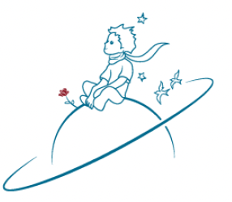
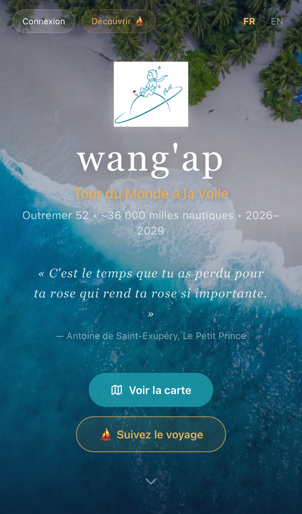
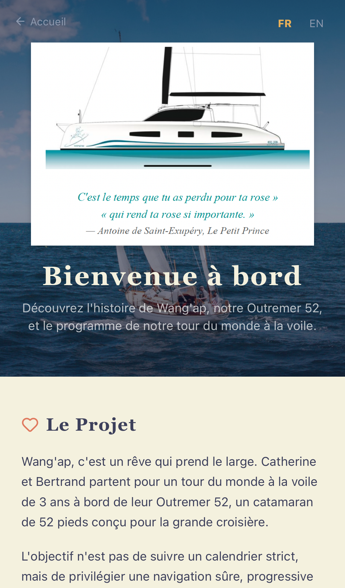
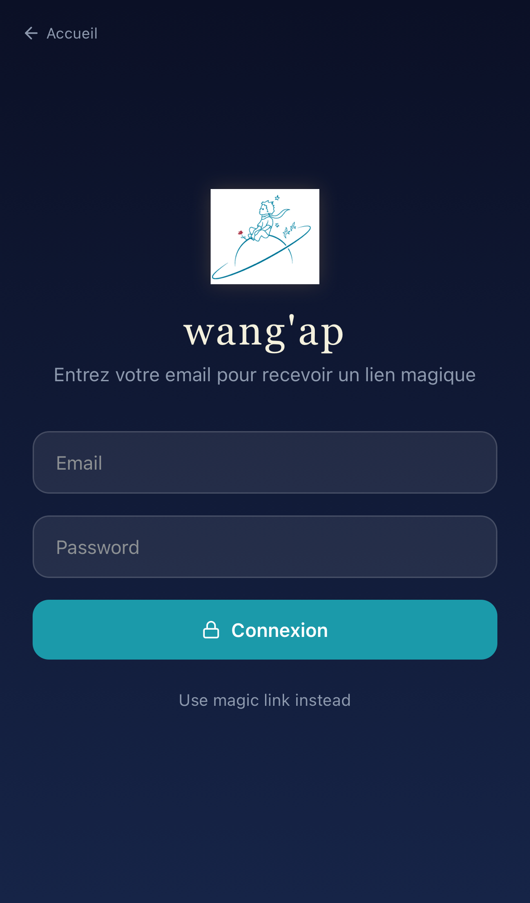
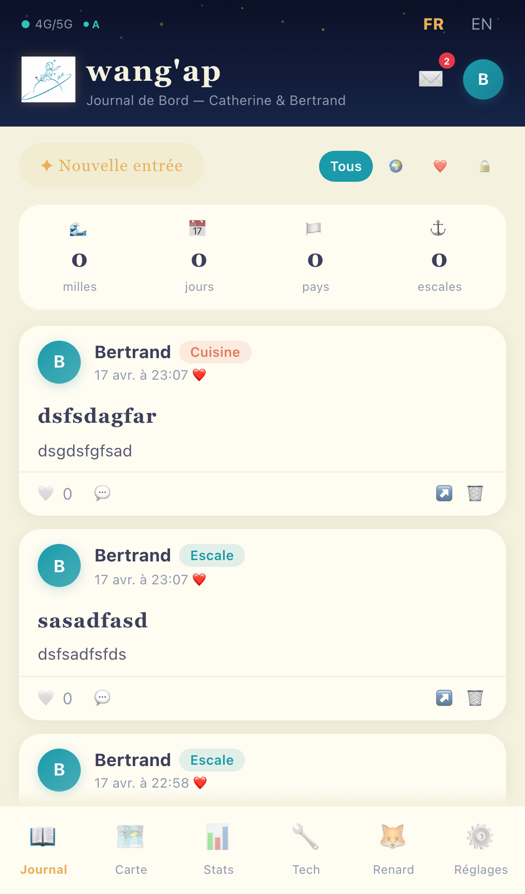
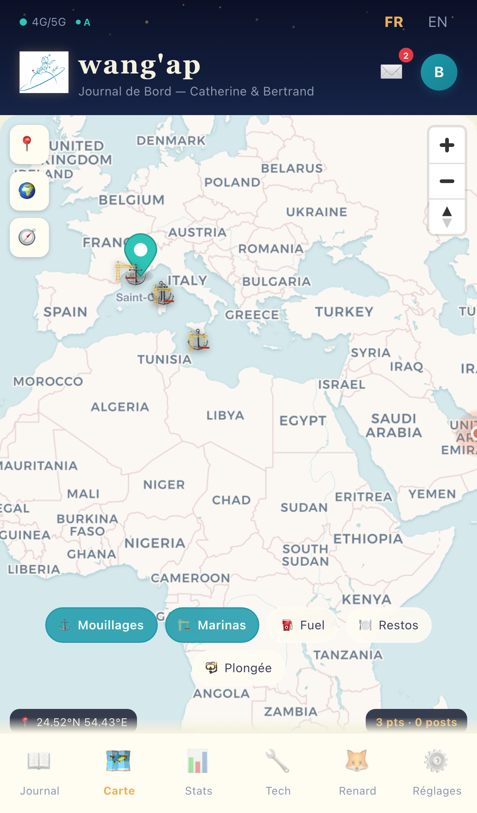
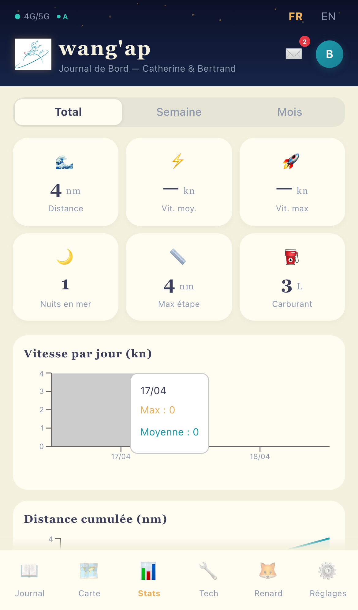
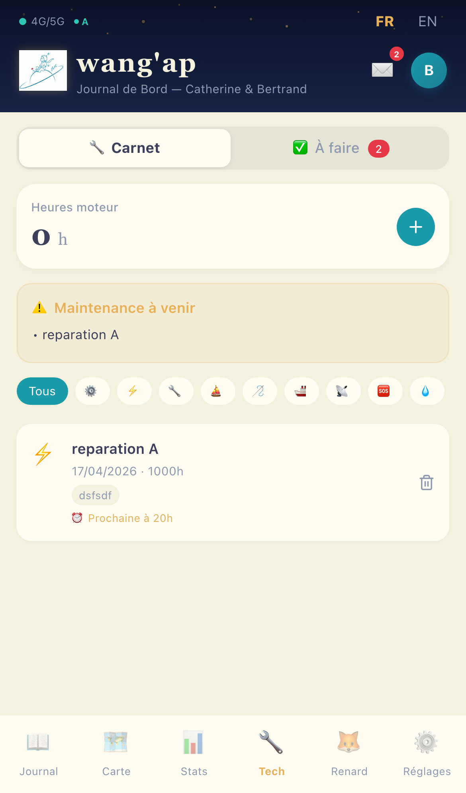
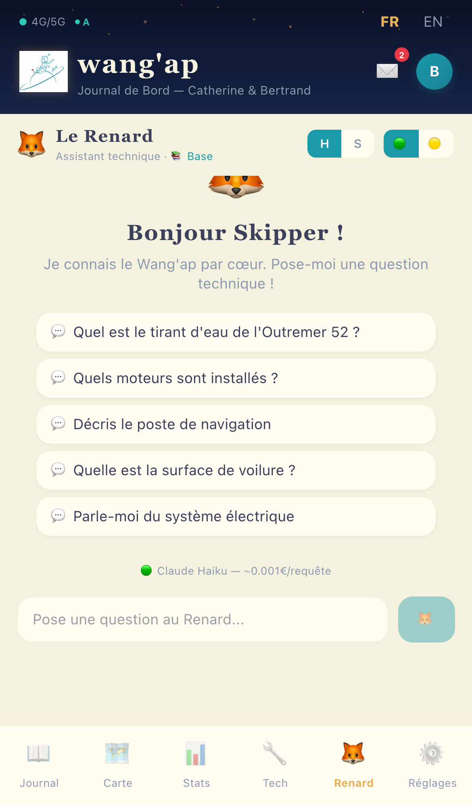
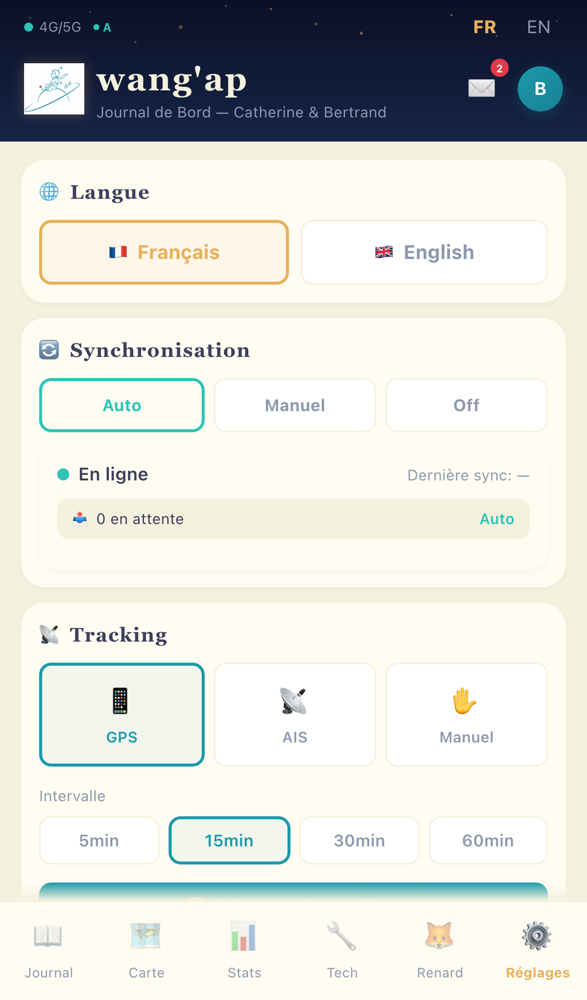

Wang'ap est le journal de bord numerique de Catherine et Bertrand, qui partent pour un tour du monde a la voile de 3 ans (2026-2029) a bord de leur catamaran Outremer 52.
L'application permet de partager le voyage en temps reel avec la famille et les amis, tout en servant d'outil de gestion technique pour les skippers : suivi GPS, carnet de maintenance, gestion des taches, et un assistant IA pour les questions techniques sur le bateau.
Concue pour fonctionner hors ligne (en pleine mer, sans connexion), l'application synchronise automatiquement les donnees des qu'une connexion est disponible (WiFi marina, Starlink, reseau mobile).



Page d'accueil avec photo aerienne du lagon, carte du parcours mondial (32 etapes), derniers articles publics, newsletter et formulaire de message aux skippers.
Visiteurs, amis, curieux
Connexion par lien magique
Catherine & Bertrand

Le fil chronologique du voyage. Chaque entree a un titre, une categorie, un niveau de visibilite (public, famille, prive), et des photos compressees automatiquement.
Barre de recherche par pull-down, filtres de visibilite, compteurs de milles parcourus et d'escales.
7 categories 3 visibilites Photos <500 Ko Commentaires
Carte plein ecran avec tuiles CARTO Voyager. Bascule vers les cartes nautiques (OpenSeaMap). Articles geolocalisees affichees sous forme de pins avec photos.
Filtres de POIs : mouillages, marinas, fuel, restaurants, sites de plongee. Position actuelle avec indicateur pulse.
MapLibre GL Cartes nautiques POIs filtres Position GPS
Tableau de bord avec KPIs : distance, vitesse moyenne et max, nuits en mer, etape max, carburant. Graphiques interactifs Recharts.
Vitesse par jour (barres), distance cumulee (courbe avec aire), repartition par categorie (camembert). Filtres Total/Semaine/Mois.
6 KPIs Recharts 3 graphiques Filtres temporels
Suivi technique complet du bateau. 12 categories : moteur, voiles, electricite, plomberie, grement, coque, mouillage, securite...
Heures moteur, pieces utilisees avec couts, alertes de prochaine echeance. Sous-onglet "A faire" pour la liste de taches prioritaires avec 4 niveaux d'urgence.
12 categories Heures moteur Pieces + couts Alertes echeance
Assistant technique propulse par Claude (Anthropic). Pose des questions sur le bateau et obtiens des reponses avec citations des manuels techniques.
Choix du modele : Haiku (~0.001€/requete, rapide) ou Sonnet (~0.006€, plus precis). Mode hors ligne avec recherche par mots-cles. Base de connaissances alimentee par upload de PDFs.
Claude API RAG Sources citees Mode offline
Configuration complete de l'application : langue (FR/EN), mode de synchronisation (Auto/Manuel/Off), source de tracking (GPS/AIS/Manuel) avec intervalle configurable.
Notifications push par categorie (nouveaux posts, commentaires, messages, alertes maintenance). Bouton "Forcer la sync" pour upload immediat.
Sync Auto/Manuel/Off GPS 5-60 min Push par categorie FR/ENBarre de navigation mobile avec 6 onglets (5 pour la famille) :
Sur desktop : barre laterale avec les memes elements.
En pleine mer, la connexion est rare. Wang'ap est concu pour fonctionner entierement hors ligne et synchroniser des qu'une connexion est disponible.
Synchronise des que le reseau est disponible. Ideal en marina avec WiFi.
Synchronise uniquement quand le skipper appuie sur le bouton. Economise les donnees Starlink.
Aucune synchronisation. Tout reste en local. Utile en navigation hauturiere.
Recherche dans la base de connaissances (RAG) puis envoie le contexte a l'API Claude. Reponse en streaming avec citations des sources (document + page).
Recherche par mots-cles dans la base locale (PostgreSQL full-text search). Pas de LLM — retourne les extraits pertinents des manuels.
React 19 + Vite 8 + Tailwind v4. Design system Le Petit Prince (nuit etoilee, palette nautique). Mobile-first, responsive. 12 pages, 40+ composants, 10 hooks custom.
Supabase : PostgreSQL avec Row Level Security, Auth (magic link + mot de passe), Storage (photos), Realtime (commentaires, messages). 11 tables, 20+ politiques RLS. Fonctions serverless Vercel.
Deploiement automatique sur chaque push. Build Vite (~0.5s), fonctions serverless pour l'API Le Renard et l'ingestion de documents.
L'AIS (Automatic Identification System) permet de suivre la position du Wang'ap et des navires a proximite. Deux sources complementaires :
Serveur open source (Node.js) sur un Raspberry Pi connecte au transpondeur AIS du bord via NMEA. Expose toutes les donnees en temps reel via WebSocket : position, COG, SOG, vent, profondeur, navires proches.
La PWA se connecte en ws://signalk.local:3000 sur le WiFi du bord.
Rafraichissement : 1-2 secondes. Fonctionne sans internet.
Suivi par MMSI quand le bateau est hors du reseau local. Ideal pour la famille qui veut suivre la position depuis la France. Couverture satellite en haute mer (delai 5-60 min).
Appel REST toutes les 5 min quand connecte. Derniere position cachee dans IndexedDB pour consultation offline.
Suivi famille ~15€/mois SatelliteFallback : si Signal K indisponible → MarineTraffic API par MMSI → cache IndexedDB
Notez de 1 a 5 et choisissez l'urgence. Cliquez sur une ligne pour voter.
Signalez un bug ou proposez une amelioration. Chaque envoi est enregistre et traite.